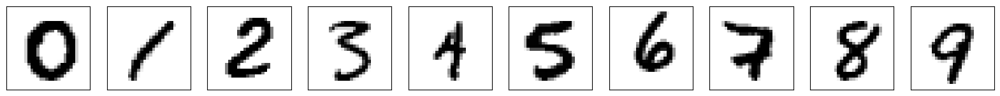
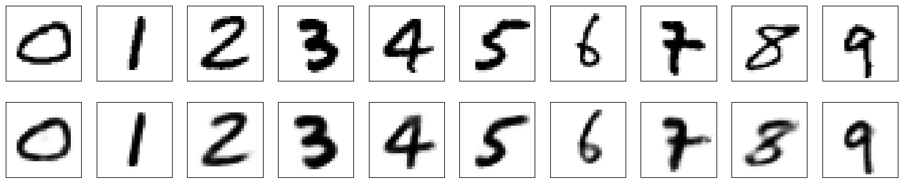

import numpy as np
import pandas as pd
import seaborn as sns
import matplotlib
import matplotlib.pyplot as plt
from sklearn.linear_model import LogisticRegression
import torch
import torch.nn as nn
import torch.nn.functional as F
from torch import optim
from torch.utils.data import TensorDataset, DataLoader
import torchvision
import warnings
warnings.filterwarnings('ignore')Lecture 5: Generative models
(mnist_train,
mnist_test) = [torchvision.datasets.MNIST(root='../data',
train=train,
download=True,
transform=torchvision.transforms.ToTensor())
for train in [True, False]]Downloading http://yann.lecun.com/exdb/mnist/train-images-idx3-ubyte.gz
Failed to download (trying next):
HTTP Error 404: Not Found
Downloading https://ossci-datasets.s3.amazonaws.com/mnist/train-images-idx3-ubyte.gz
Downloading https://ossci-datasets.s3.amazonaws.com/mnist/train-images-idx3-ubyte.gz to ../data/MNIST/raw/train-images-idx3-ubyte.gz100%|██████████| 9.91M/9.91M [00:00<00:00, 28.6MB/s]Extracting ../data/MNIST/raw/train-images-idx3-ubyte.gz to ../data/MNIST/raw
Downloading http://yann.lecun.com/exdb/mnist/train-labels-idx1-ubyte.gz
Failed to download (trying next):
HTTP Error 404: Not Found
Downloading https://ossci-datasets.s3.amazonaws.com/mnist/train-labels-idx1-ubyte.gz
Downloading https://ossci-datasets.s3.amazonaws.com/mnist/train-labels-idx1-ubyte.gz to ../data/MNIST/raw/train-labels-idx1-ubyte.gz100%|██████████| 28.9k/28.9k [00:00<00:00, 1.05MB/s]Extracting ../data/MNIST/raw/train-labels-idx1-ubyte.gz to ../data/MNIST/raw
Downloading http://yann.lecun.com/exdb/mnist/t10k-images-idx3-ubyte.gz
Failed to download (trying next):
HTTP Error 404: Not Found
Downloading https://ossci-datasets.s3.amazonaws.com/mnist/t10k-images-idx3-ubyte.gzDownloading https://ossci-datasets.s3.amazonaws.com/mnist/t10k-images-idx3-ubyte.gz to ../data/MNIST/raw/t10k-images-idx3-ubyte.gz100%|██████████| 1.65M/1.65M [00:00<00:00, 8.89MB/s]Extracting ../data/MNIST/raw/t10k-images-idx3-ubyte.gz to ../data/MNIST/raw
Downloading http://yann.lecun.com/exdb/mnist/t10k-labels-idx1-ubyte.gz
Failed to download (trying next):
HTTP Error 404: Not Found
Downloading https://ossci-datasets.s3.amazonaws.com/mnist/t10k-labels-idx1-ubyte.gz
Downloading https://ossci-datasets.s3.amazonaws.com/mnist/t10k-labels-idx1-ubyte.gz to ../data/MNIST/raw/t10k-labels-idx1-ubyte.gz100%|██████████| 4.54k/4.54k [00:00<00:00, 8.68MB/s]Extracting ../data/MNIST/raw/t10k-labels-idx1-ubyte.gz to ../data/MNIST/raw
train_loader = DataLoader(dataset=mnist_train, batch_size=64, shuffle=True, num_workers=4)
test_loader = DataLoader(dataset=mnist_test, batch_size=64, shuffle=False)# what does one data batch look like?
# fetch the next batch of data from the train_loader
# iter(train_loader) converts the train_loader into an iterator
# next(...) retrieves the next batch from the iterator
batch = next(iter(train_loader))batch[tensor([[[[0., 0., 0., ..., 0., 0., 0.],
[0., 0., 0., ..., 0., 0., 0.],
[0., 0., 0., ..., 0., 0., 0.],
...,
[0., 0., 0., ..., 0., 0., 0.],
[0., 0., 0., ..., 0., 0., 0.],
[0., 0., 0., ..., 0., 0., 0.]]],
[[[0., 0., 0., ..., 0., 0., 0.],
[0., 0., 0., ..., 0., 0., 0.],
[0., 0., 0., ..., 0., 0., 0.],
...,
[0., 0., 0., ..., 0., 0., 0.],
[0., 0., 0., ..., 0., 0., 0.],
[0., 0., 0., ..., 0., 0., 0.]]],
[[[0., 0., 0., ..., 0., 0., 0.],
[0., 0., 0., ..., 0., 0., 0.],
[0., 0., 0., ..., 0., 0., 0.],
...,
[0., 0., 0., ..., 0., 0., 0.],
[0., 0., 0., ..., 0., 0., 0.],
[0., 0., 0., ..., 0., 0., 0.]]],
...,
[[[0., 0., 0., ..., 0., 0., 0.],
[0., 0., 0., ..., 0., 0., 0.],
[0., 0., 0., ..., 0., 0., 0.],
...,
[0., 0., 0., ..., 0., 0., 0.],
[0., 0., 0., ..., 0., 0., 0.],
[0., 0., 0., ..., 0., 0., 0.]]],
[[[0., 0., 0., ..., 0., 0., 0.],
[0., 0., 0., ..., 0., 0., 0.],
[0., 0., 0., ..., 0., 0., 0.],
...,
[0., 0., 0., ..., 0., 0., 0.],
[0., 0., 0., ..., 0., 0., 0.],
[0., 0., 0., ..., 0., 0., 0.]]],
[[[0., 0., 0., ..., 0., 0., 0.],
[0., 0., 0., ..., 0., 0., 0.],
[0., 0., 0., ..., 0., 0., 0.],
...,
[0., 0., 0., ..., 0., 0., 0.],
[0., 0., 0., ..., 0., 0., 0.],
[0., 0., 0., ..., 0., 0., 0.]]]]),
tensor([6, 3, 3, 8, 6, 6, 4, 9, 2, 0, 2, 3, 1, 1, 5, 2, 9, 0, 6, 2, 5, 0, 6, 0,
3, 7, 7, 7, 7, 8, 5, 3, 9, 0, 2, 3, 3, 9, 5, 7, 2, 4, 5, 2, 9, 8, 5, 4,
8, 5, 6, 4, 0, 7, 7, 4, 7, 1, 5, 9, 9, 6, 3, 9])]batch[0].shape # this is the image, dims are: B, C, H, W (gray image so C=1)torch.Size([64, 1, 28, 28])imgs = batch[0]# note: when we input the data, it will need to be B, H * W
imgs = imgs.reshape(imgs.shape[0], 28*28)imgs.shape # this shape will be what we input to the VAEtorch.Size([64, 784])print(torch.min(imgs), torch.max(imgs)) # range of pixel values. 0 is white pixels, 1 is black pixels, in between are graytensor(0.) tensor(1.)batch[1] # this is the label for each imagetensor([6, 3, 3, 8, 6, 6, 4, 9, 2, 0, 2, 3, 1, 1, 5, 2, 9, 0, 6, 2, 5, 0, 6, 0,
3, 7, 7, 7, 7, 8, 5, 3, 9, 0, 2, 3, 3, 9, 5, 7, 2, 4, 5, 2, 9, 8, 5, 4,
8, 5, 6, 4, 0, 7, 7, 4, 7, 1, 5, 9, 9, 6, 3, 9])Plot data examples
n_img = 10
num_cols = 5
num_rows = 2
plt.figure(figsize=(2 * 2 * num_cols, 2 * num_rows))
for i in range(n_img):
# for each label, get an image from the test dataset with that label
inds = torch.where(mnist_test.test_labels == i)[0].numpy()
ind = np.random.choice(inds)
x, label = mnist_test[ind]
plt.subplot(num_rows, 2 * num_cols, i + 1)
plt.xticks([])
plt.yticks([])
plt.grid(False)
plt.imshow(x[0].detach().cpu().numpy(), cmap=plt.cm.binary)
Define VAE class
class VAE(torch.nn.Module):
def __init__(self, input_dim, latent_dim, hidden_dim, loss_type='mse'):
super(VAE, self).__init__()
self.loss_type = loss_type
# define encoder and decoder functions in the init
self.q_z = nn.Sequential(nn.Linear(input_dim, hidden_dim),
nn.ReLU(),
nn.Linear(hidden_dim, hidden_dim),
nn.ReLU())
self.z_mean = nn.Linear(hidden_dim, latent_dim)
self.z_log_var = nn.Linear(hidden_dim, latent_dim)
self.generator = nn.Sequential(nn.Linear(latent_dim, hidden_dim),
nn.ReLU(),
nn.Linear(hidden_dim, hidden_dim),
nn.ReLU(),
nn.Linear(hidden_dim, input_dim))
def encode(self, x):
q_z = self.q_z(x)
z_mean = self.z_mean(q_z)
z_log_var = self.z_log_var(q_z)
return z_mean, z_log_var
def reparameterize(self, mean, log_var):
std = torch.exp(0.5 * log_var)
eps = torch.randn_like(std)
sample = mean + eps * std
return sample
def decode(self, z):
x_reconstructed = self.generator(z)
if self.loss_type == 'binary':
x_reconstructed = F.sigmoid(x_reconstructed)
return x_reconstructed
def forward(self, x):
z_mean, z_log_var = self.encode(x)
z = self.reparameterize(z_mean, z_log_var)
x_mean = self.decode(z)
# f_theta(z^l) # one monte carlo sample
return x_mean, z, z_mean, z_log_var
def reconstruction_loss(self, x_pred, x):
if self.loss_type == 'mse':
loss = nn.MSELoss()
reconstruction_loss = 0.5 * loss(x_pred, x)
if self.loss_type == 'binary':
reconstruction_loss = x * torch.log(x_pred + 1e-6) + \
(1-x) * torch.log(1 - x_pred + 1e-6)
reconstruction_loss = -reconstruction_loss.sum(1).mean()
return reconstruction_loss
def vae_loss(self, x):
x_mean, z, z_mean, z_log_var = self.forward(x)
kld = 1 + z_log_var - z_mean.pow(2) - z_log_var.exp()
kl_loss = -0.5 * torch.mean(kld)
reconstruction_loss = self.reconstruction_loss(x_mean, x)
return reconstruction_loss, kl_lossinput_dim = 28 * 28 # mnist pixels 28x28=784
hidden_dim = 300
latent_dim = 10 # we are compressing each image of 784 pixels to a 10 dim vector - we are compressing a lot of informationmodel = VAE(input_dim, latent_dim, hidden_dim, loss_type='binary') # loss type = 'binary' because pixels are in [0, 1]
lr = 1e-3
epochs = 50
optimizer = optim.Adam(model.parameters(), lr=lr)
# set model to training mode
model.train()
for epoch in range(epochs):
epoch_loss = 0
epoch_recon = 0
epoch_kl = 0
for x_batch, y_batch in train_loader:
x_batch = x_batch.reshape(x_batch.shape[0], 28*28)
reconstruction_loss, kl_loss = model.vae_loss(x_batch)
total_loss = reconstruction_loss + kl_loss
total_loss.backward()
optimizer.step()
optimizer.zero_grad()
epoch_loss += total_loss.item()
epoch_recon += reconstruction_loss.item()
epoch_kl += kl_loss.item()
epoch_loss = epoch_loss / len(train_loader)
epoch_recon = epoch_recon / len(train_loader)
epoch_kl = epoch_kl / len(train_loader)
if epoch % 10 == 0:
print('epoch: ', epoch, 'loss:', f"{epoch_loss:.3}", 'recon loss:', f"{epoch_recon:.3}",
'kld:', f"{epoch_kl:.3}")
epoch: 0 loss: 1.41e+02 recon loss: 1.38e+02 kld: 2.65
epoch: 10 loss: 82.4 recon loss: 79.1 kld: 3.3
epoch: 20 loss: 79.5 recon loss: 76.2 kld: 3.32
epoch: 30 loss: 78.1 recon loss: 74.8 kld: 3.33
epoch: 40 loss: 77.3 recon loss: 73.9 kld: 3.34# save model
torch.save(model.state_dict(), "vae_latent_" + str(latent_dim) + ".pt")# load models
latent_dim = 10
model = VAE(input_dim, latent_dim, hidden_dim, loss_type='binary')model.load_state_dict(torch.load("vae_latent_" + str(latent_dim) + ".pt"))<All keys matched successfully>Plot reconstructions
- see how reconstructions change for models with different
latent_dim
model.eval()
n_img = 10
num_cols = 5
num_rows = 2
plt.figure(figsize=(2 * 2 * num_cols, 2 * num_rows))
for i in range(n_img):
# for each label, get an image from the test dataset with that label
inds = torch.where(mnist_test.test_labels == i)[0].numpy()
ind = np.random.choice(inds)
x, label = mnist_test[ind]
x_batch = x.reshape(x.shape[0], 28*28)
x_mean, z, z_mean, z_log_var = model(x_batch)
x_recon = x_mean.reshape((28,28))
plt.subplot(num_rows, 2 * num_cols, i + 1)
plt.xticks([])
plt.yticks([])
plt.grid(False)
plt.imshow(x[0].detach().cpu().numpy(), cmap=plt.cm.binary)
plt.subplot(num_rows, 2 * num_cols, (i + 1) + 2 * num_cols)
plt.xticks([])
plt.yticks([])
plt.grid(False)
plt.imshow(x_recon.detach().cpu().numpy(), cmap=plt.cm.binary)

Plot the 2-dimensional latent space
Before we had latent_dim=10. Now let’s look at latent_dim=2 (more compression)
# load models
latent_dim = 2
model = VAE(input_dim, latent_dim, hidden_dim, loss_type='binary')
model.load_state_dict(torch.load("vae_latent_" + str(latent_dim) + ".pt"))--------------------------------------------------------------------------- FileNotFoundError Traceback (most recent call last) Cell In[17], line 5 2 latent_dim = 2 3 model = VAE(input_dim, latent_dim, hidden_dim, loss_type='binary') ----> 5 model.load_state_dict(torch.load("vae_latent_" + str(latent_dim) + ".pt")) File ~/anaconda3/envs/sparse-vae/lib/python3.12/site-packages/torch/serialization.py:1319, in load(f, map_location, pickle_module, weights_only, mmap, **pickle_load_args) 1316 if "encoding" not in pickle_load_args.keys(): 1317 pickle_load_args["encoding"] = "utf-8" -> 1319 with _open_file_like(f, "rb") as opened_file: 1320 if _is_zipfile(opened_file): 1321 # The zipfile reader is going to advance the current file position. 1322 # If we want to actually tail call to torch.jit.load, we need to 1323 # reset back to the original position. 1324 orig_position = opened_file.tell() File ~/anaconda3/envs/sparse-vae/lib/python3.12/site-packages/torch/serialization.py:659, in _open_file_like(name_or_buffer, mode) 657 def _open_file_like(name_or_buffer, mode): 658 if _is_path(name_or_buffer): --> 659 return _open_file(name_or_buffer, mode) 660 else: 661 if "w" in mode: File ~/anaconda3/envs/sparse-vae/lib/python3.12/site-packages/torch/serialization.py:640, in _open_file.__init__(self, name, mode) 639 def __init__(self, name, mode): --> 640 super().__init__(open(name, mode)) FileNotFoundError: [Errno 2] No such file or directory: 'vae_latent_2.pt'
model.eval()
n_img = 10
num_cols = 5
num_rows = 2
plt.figure(figsize=(2 * 2 * num_cols, 2 * num_rows))
for i in range(n_img):
# for each label, get an image from the test dataset with that label
inds = torch.where(mnist_test.test_labels == i)[0].numpy()
ind = np.random.choice(inds)
x, label = mnist_test[ind]
x_batch = x.reshape(x.shape[0], 28*28)
x_mean, z, z_mean, z_log_var = model(x_batch)
x_recon = x_mean.reshape((28,28))
plt.subplot(num_rows, 2 * num_cols, i + 1)
plt.xticks([])
plt.yticks([])
plt.grid(False)
plt.imshow(x[0].detach().cpu().numpy(), cmap=plt.cm.binary)
plt.subplot(num_rows, 2 * num_cols, (i + 1) + 2 * num_cols)
plt.xticks([])
plt.yticks([])
plt.grid(False)
plt.imshow(x_recon.detach().cpu().numpy(), cmap=plt.cm.binary)
labels = mnist_test.test_labels
labels = labels.numpy()
labels = labels.reshape(-1, 1)x_test = mnist_test.data
x_test = x_test.reshape(x_test.shape[0], 28*28)
x_test = x_test.to(torch.float) z_test, _ = model.encode(x_test)
z_np = z_test.detach().numpy()df = pd.DataFrame(z_np, columns = ['z' + str(i+1) for i in range(z_np.shape[1])])
df['label'] = labels
df['label'] = df['label'].astype('category')# Create a scatter plot with colored clusters
sns.scatterplot(x='z1', y='z2', hue='label', data=df)
Compare with PCA
- PCA does linear dimension reduction (VAE does nonlinear dimension reduction)
from sklearn.preprocessing import StandardScaler
x_test_std = StandardScaler().fit_transform(x_test)
print(x_test_std.shape)
labels = mnist_test.test_labels
labels = labels.numpy()
# labels = labels.reshape(-1, 1)
from sklearn import decomposition
pca = decomposition.PCA()
pca.n_components = 2
# select 2 components for 2-D visualization
pca_data = pca.fit_transform(x_test_std)
# pca_reduced will contain the 2-d projects of simple data
print("shape of pca_reduced.shape = ", pca_data.shape)
pca_data = np.vstack((pca_data.T, labels)).T
pca_df = pd.DataFrame(data=pca_data, columns=("z1", "z2", "label"))
sns.FacetGrid(pca_df, hue="label", height=6, aspect=1).map(plt.scatter, 'z1', 'z2', s=10).add_legend()
# sns.scatterplot(x='z1', y='z2', hue='label', data=pca_df)
plt.show()(10000, 784)
shape of pca_reduced.shape = (10000, 2)Plot latent traversals
- How can we better understand what the dimensions of the VAE latent space correspond to?
- We can plot latent traversals for
latent_dim=10 - We consider a range of
zvalues and see what their corresponding reconstructedximage looks like
# load models
latent_dim = 10
model = VAE(input_dim, latent_dim, hidden_dim, loss_type='binary')
model.load_state_dict(torch.load("vae_latent_" + str(latent_dim) + ".pt"))<All keys matched successfully># Create a grid of latent vectors for traversal
n_samples = 20
grid_x = np.linspace(-3, 3, n_samples)
grid_y = np.linspace(-3, 3, n_samples)
traversal_grid = torch.FloatTensor(n_samples, n_samples, 10)
for i, xi in enumerate(grid_x):
for j, yi in enumerate(grid_y):
z_sample = torch.FloatTensor([[xi, yi, 0, 0, 0, 0, 0, 0, 0, 0]])
traversal_grid[j, i] = z_sample# these are the range of x and y values we consider
print(grid_x)
print(grid_y)[-3. -2.68421053 -2.36842105 -2.05263158 -1.73684211 -1.42105263
-1.10526316 -0.78947368 -0.47368421 -0.15789474 0.15789474 0.47368421
0.78947368 1.10526316 1.42105263 1.73684211 2.05263158 2.36842105
2.68421053 3. ]
[-3. -2.68421053 -2.36842105 -2.05263158 -1.73684211 -1.42105263
-1.10526316 -0.78947368 -0.47368421 -0.15789474 0.15789474 0.47368421
0.78947368 1.10526316 1.42105263 1.73684211 2.05263158 2.36842105
2.68421053 3. ]# we vary each dimension while holding the other dimension fixed so we can interpret each dimension
traversal_grid[0, 0, :]tensor([-3., -3., 0., 0., 0., 0., 0., 0., 0., 0.])traversal_grid[1, 0, :]tensor([-3.0000, -2.6842, 0.0000, 0.0000, 0.0000, 0.0000, 0.0000, 0.0000,
0.0000, 0.0000])# Generate images from the latent traversal grid
with torch.no_grad():
traversal_grid = traversal_grid.view(-1, 10) # collapsing to 400 x 10
generated_images = model.decode(traversal_grid).view(-1, 1, 28, 28) # B x C x H x W# Plot the generated images
plt.figure(figsize=(10, 10))
for i in range(n_samples):
for j in range(n_samples):
plt.subplot(n_samples, n_samples, i * n_samples + j + 1)
plt.imshow(generated_images[i * n_samples + j].squeeze().cpu().numpy(), cmap="gray")
plt.axis('off')
plt.show()
# latent traversal plots
# try other verison
# Create a grid of latent vectors for traversal
n_samples = 20
grid_x = np.linspace(-3, 3, n_samples)
grid_y = np.linspace(-3, 3, n_samples)
traversal_grid = torch.FloatTensor(n_samples, n_samples, 10)
for i, xi in enumerate(grid_x):
for j, yi in enumerate(grid_y):
z_sample = torch.FloatTensor([[0, 0, 0, xi, yi, 0, 0, 0, 0, 0]])
traversal_grid[j, i] = z_sample
# Generate images from the latent traversal grid
with torch.no_grad():
traversal_grid = traversal_grid.view(-1, 10) # collapsing to 400 x 10
generated_images = model.decode(traversal_grid).view(-1, 1, 28, 28) # B x C x H x W
# Plot the generated images
plt.figure(figsize=(10, 10))
for i in range(n_samples):
for j in range(n_samples):
plt.subplot(n_samples, n_samples, i * n_samples + j + 1)
plt.imshow(generated_images[i * n_samples + j].squeeze().cpu().numpy(), cmap='gray')
plt.axis('off')
plt.show()